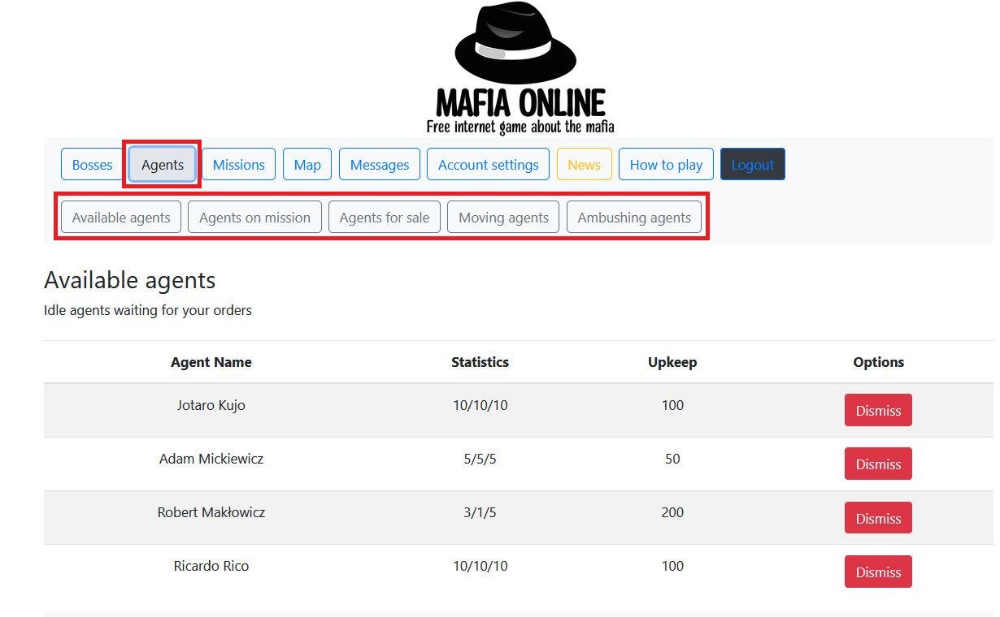

Agents
Agents are your employees. They can be sent on various missions. After creating the game you get 3 agents who have the same name as the mafia boss you created. In addition, you can buy additional agents for a certain amount of money. Each of the agents has its own statistics: strength, dexterity, intelligence. They are important when completing missions or shootings.
- going on missions
- preparation of the trap
- patrolling
There are several agent lists:
- "Available agents" containing all agents waiting for your orders
- "Agents on mission" containing agents on mission
- "Agents for sale" containing agents, which you can buy
- "Moving agents" containing moving agents (for example going on mission)"
- "Ambushing agents" containing agents, which prepared ambush"

Your agents can be dismissed. Then he ceases to be your agent. Agents from yor family cannot be dismissed.